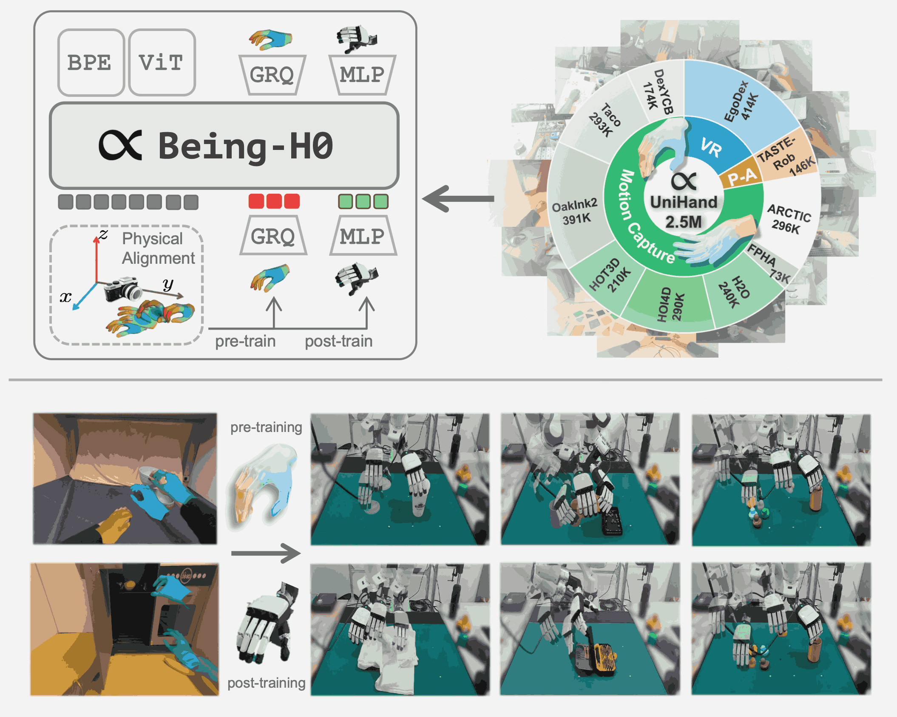
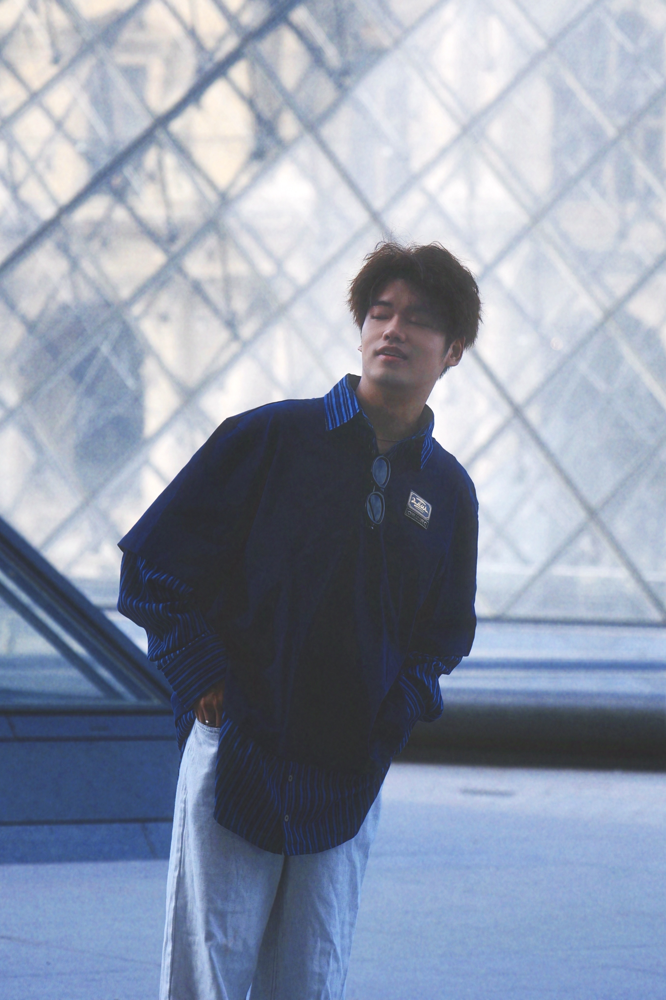

Being-H0: Vision-Language-Action Pretraining from Large-Scale Human Videos

I am a fourth-year Ph.D. student at School of Computer Science, Peking University, advised by Prof. Zongqing Lu, and expect to graduate in 2027. Before starting my Ph.D., I received my B.E. in Computer Science from Peking University.
My current research focuses on Embodied AI, especially Embodied Foundation Models. Specifically, I am working on generalizable VLAs scalable with human videos and action-oriented latent representations learned with world models. I have previously worked on VLMs, particularly for egocentric video understanding. Feel free to reach out if you are interested in discussions or collaborations.
Personally, I am particularly inspired by JEPA, and believe that transition-aware and interaction-centric representations can boost progress toward truly generalizable policies with broad in-context reasoning.
Learning from Videos — VLA
Joint-Aligned Latent Action: Towards Scalable VLA Pretraining in the Wild
Spatial-Aware VLA Pretraining through Visual-Physical Alignment from Human Videos
Learning from Videos — Visual Policy
Learning Video-Conditioned Policy on Unlabelled Data with Joint Embedding Predictive Transformer
Pre-trained Visual Dynamics Representations for Efficient Policy Learning
Reinforcement Learning Friendly Vision-Language Model for Minecraft
VLM
OpenMMEgo: Enhancing Egocentric Understanding for LMMs with Open Weights and Data
Unified Multimodal Understanding via Byte-Pair Visual Encoding
VideoOrion: Tokenizing Object Dynamics in Videos
Research Intern, Being Exploring-Large Models
Developing the Being-H series of embodied foundation models pretrained from human videos.
Exploring scalable VLA and latent world-action models for embodied intelligence.
Research Intern, Multimodal Interaction Group
Conducted researches on video-based representation learning for policy learning and VLMs.
Lingjun Pilot Scholarship, Merit Student, Academic Excellence Award, Social Work Award, all at PKU
ICML, NeurIPS (before 2026), ICLR, CVPR, ICCV, ECCV, BMVC
Algorithms, PKU, Spring 2021, 2022
Deep Reinforcement Learning, PKU, Spring 2024